1.5 Calculus
Calculus Volume 1 - OpenStax
Created Date: 2025-05-10
Just quickly familiarize yourself with the core concepts of calculus and recall the math classes you have taken. If you have not studied it, you need to read the recommended textbooks in detail.
1.4.1 Functions and Graphs
In this section, we provide a formal definition of a function and examine several ways in which functions are represented—namely, through tables, formulas, and graphs. We study formal notation and terms related to functions. We also define composition of functions and symmetry properties. Most of this material will be a review for you, but it serves as a handy reference to remind you of some of the algebraic techniques useful for working with functions.
1.4.1.1 Review of Functions
Linear functions have the form \(f(x) = ax + b\), where \(a\) and \(b\) are constants. The following figure plots \(f(x) = 83x + 250\):
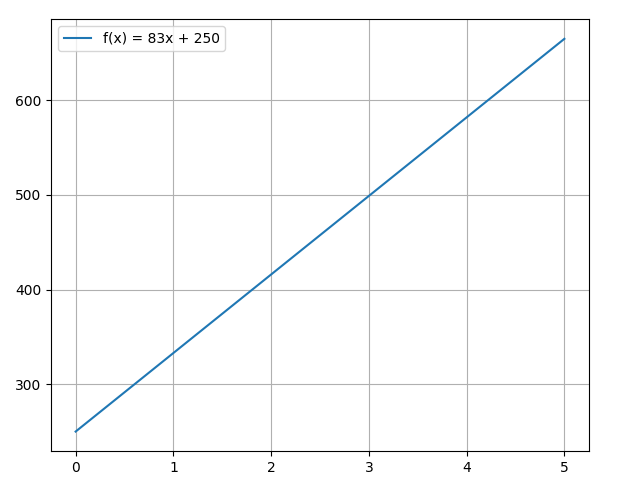
Consider line \(L\) passing through points \((x_1, y_1)\) and \((x_2, y_2)\). Let \(\triangle{y} = y_2 - y_1\) and \(\triangle{x} = x_2 - x_1\) denote the changes in \(y\) and \(x\), respectively. The slope of the line is:
1.4.1.2 Basic Classes of Functions
A linear function is a special type of a more general class of functions: polynomials. A polynomial function is any function that can be written in the form:
for some integer \(n \ge 0\) and constants \(a_n, a_{n-1}, \cdots, a_0\), where \(a_n \ne 0\).
1.4.1.3 Trigonometric Functions
On the unit circle, the point at angle \(x\) radians has coordinates \((\cos x, \sin x)\). Sine is the vertical coordinate, cosine the horizontal one, and tangent is their ratio \(\tan x = \sin x / \cos x\), defined wherever cosine is not zero.
Both sine and cosine repeat every \(2\pi\), stay between \(-1\) and \(1\), and are smooth. That smoothness is why their derivatives, computed later in this chapter, are again trigonometric functions. You will meet the same pair whenever a model needs a periodic feature, for example a position along a cycle.
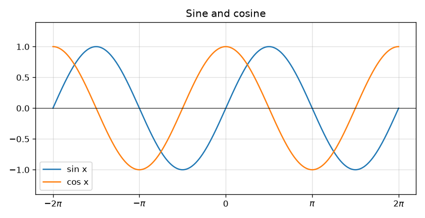
Figure 1 - Sine and cosine
1.4.1.4 Inverse Functions
A function \(f\) has an inverse when each output comes from exactly one input. The inverse \(f^{-1}\) swaps the two: if \(f(a) = b\), then \(f^{-1}(b) = a\). The graph of the inverse is the graph of \(f\) reflected across the line \(y = x\).
Not every function has an inverse on its whole domain. \(f(x) = x^2\) fails, because both \(2\) and \(-2\) square to \(4\). Restrict the domain to \(x \ge 0\) and the inverse is the square root. The same idea gives \(\ln\) as the inverse of \(e^x\), which is the pair drawn below.
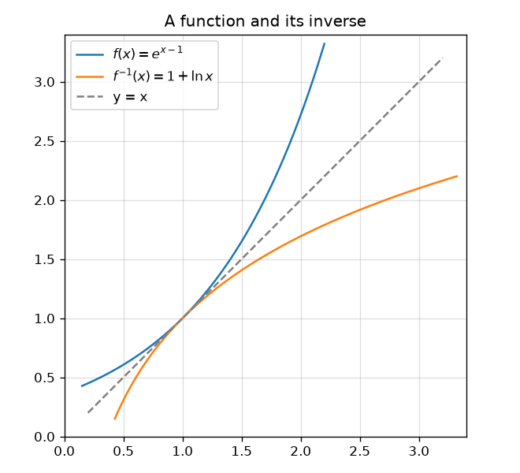
Figure 2 - A function and its inverse
1.4.1.5 Exponential and Logarithmic Functions
An exponential function has the form \(f(x) = a^x\) with \(a > 0\) and \(a \ne 1\). The most useful base is \(e \approx 2.71828\), because the slope of \(e^x\) at every point equals the height of the curve. A logarithm is the inverse question: \(\log_a y\) is the exponent that turns \(a\) into \(y\). The natural logarithm \(\ln y\) uses base \(e\).
Two identities are worth memorizing, because training losses use them constantly. A product inside a log becomes a sum, \(\ln(uv) = \ln u + \ln v\), and a power comes down, \(\ln(u^c) = c \ln u\). That is why a model can minimize the log of a likelihood instead of the likelihood itself: the location of the minimum does not change, and the arithmetic is stabler.
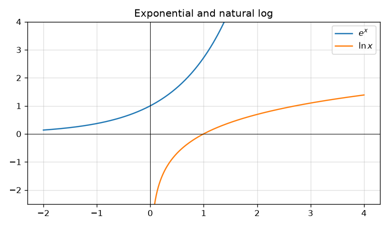
Figure 3 - \(e^x\) and \(\ln x\)
1.4.2 Limits
A limit describes the value a function approaches as its input approaches some number. The function does not have to attain that value, and it does not have to be defined at the point itself. Derivatives are limits of slopes, and integrals are limits of sums, so every later section in this chapter rests on this idea.
1.4.2.1 A Preview of Calculus
Calculus answers two geometric questions. The first: how steep is a curve at a single point? The second: how much area sits under a curve between two vertical lines? The steepness question becomes the derivative. The area question becomes the integral. They look unrelated until the fundamental theorem of calculus shows that each undoes the other.
Deep learning lives almost entirely on the first question. Training moves each weight a little in the direction that reduces the loss, and that direction is a derivative. The area question returns when a probability model has to integrate a density, which is why the diffusion chapters need both.
1.4.2.2 The Limit of a Function
We write \(\lim_{x \to a} f(x) = L\) when \(f(x)\) gets arbitrarily close to \(L\) as \(x\) gets arbitrarily close to \(a\), from both sides. The value \(f(a)\), if it even exists, is irrelevant.
A standard example is \(f(x) = (x^2 - 1)/(x - 1)\). Direct substitution at \(x = 1\) divides by zero, so \(f(1)\) is undefined. For every other \(x\), the expression simplifies to \(x + 1\), which approaches \(2\). The limit is \(2\). The open circle in the figure is the missing point; the curve still aims at it.
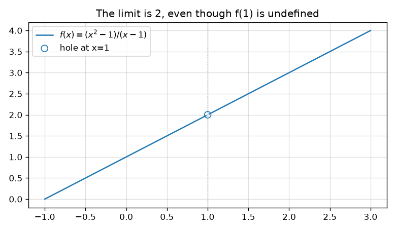
Figure 4 - The limit exists at the hole
One-sided limits matter when the two sides disagree. \(\lim_{x \to 0^+} 1/x\) runs to \(+\infty\) and \(\lim_{x \to 0^-} 1/x\) runs to \(-\infty\), so the two-sided limit does not exist.
1.4.2.3 The Limit Laws
Suppose \(\lim_{x \to a} f(x)\) and \(\lim_{x \to a} g(x)\) both exist, and let \(c\) be a constant. Then the limit of a sum, difference, or constant multiple is the sum, difference, or multiple of the limits. The limit of a product is the product of the limits. The limit of a quotient is the quotient of the limits, provided the limit of the denominator is not zero. Powers pass through the limit as well: \(\lim_{x \to a} [f(x)]^n = [\lim_{x \to a} f(x)]^n\).
These laws are why polynomials are easy. \(\lim_{x \to 2} (3x^2 - x + 4)\) is just the polynomial evaluated at \(2\), which is \(14\). You only need a special argument when substitution hits a zero denominator or an infinity.
1.4.2.4 Continuity
A function is continuous at \(a\) when three things hold: \(f(a)\) is defined, \(\lim_{x \to a} f(x)\) exists, and the two are equal. Informally, you can draw the graph through that point without lifting the pen.
Polynomials, sine, cosine, and \(e^x\) are continuous everywhere they are defined. A quotient of continuous functions is continuous wherever the denominator is not zero. The three usual failures are a hole (the limit exists but \(f(a)\) does not), a jump (the one-sided limits differ), and a vertical asymptote (the function blows up).
A network built from sums, products, and ReLU is continuous: ReLU, \( \max(x, 0) \), has no jump. Continuity is not the same as differentiability. ReLU has a corner at \(0\), and the derivative there is not defined in the classical sense. Training still proceeds by picking a one-sided slope, which is enough for the gradient step in the next chapter.
1.4.2.5 The Precise Definition of a Limit
The sentence "gets arbitrarily close" has a precise form. \(\lim_{x \to a} f(x) = L\) means: for every tolerance \(\varepsilon > 0\), there is a distance \(\delta > 0\) such that
The strict inequality \(0 < |x - a|\) is what leaves \(f(a)\) out of the definition. For a concrete case, take \(f(x) = 2x\), \(a = 1\), \(L = 2\). Then \(|2x - 2| = 2|x - 1|\). Choosing \(\delta = \varepsilon / 2\) forces the error under \(\varepsilon\). Most of the time you will not write an \(\varepsilon\)-\(\delta\) proof; you will use the limit laws. The definition is here so the derivative, which is a limit, means something exact.
1.4.3 Derivatives
A derivative is the slope of a curve at one point, defined as a limit of secant slopes. The rules that follow are how you compute that slope without writing the limit every time.
1.4.3.1 Defining the Derivative
Now that we have both a conceptual understanding of a limit and the practical ability to compute limits, we have established the foundation for our study of calculus, the branch of mathematics in which we compute derivatives and integrals.
Tangent Lines
We begin our study of calculus by revisiting the notion of secant lines and tangent lines. Recall that we used the slope of a secant line to a function at a point \((a, f(a))\) to estimate the rate of change, or the rate at which one variable changes in relation to another variable. We can obtain the slope of the secant by choosing a value of \(x\) near \(a\) and drawing a line through the points \((a, f(a))\) and \((x, f(x))\). The slope of this line is given by an equation in the form of a difference quotient:
We can also calculate the slope of a secant line to a function at a value a by using this equation and replacing \(x\) with \(a + h\), where \(h\) is a value close to 0. We can then calculate the slope of the line through the points \((a, f(a))\) and \((a + h, f(a + h))\). In this case, we find the secant line has a slope given by the following difference quotient with increment \(h\):
These two expressions for calculating the slope of a secant line are illustrated in Figure 1. We will see that each of these two methods for finding the slope of a secant line is of value. Depending on the setting, we can choose one or the other. The primary consideration in our choice usually depends on ease of calculation.
The Derivative of a Function at a Point
The derivative of \(f\) at \(a\) is the limit of those secant slopes, when the limit exists:
For \(f(x) = x^2\) at \(a = 1\), the difference quotient is \((1 + 2h + h^2 - 1)/h = 2 + h\), and the limit as \(h \to 0\) is \(2\). The animation starts with a wide secant and shrinks \(h\). The secant slope falls toward \(2\), which is the slope of the tangent line drawn in green.
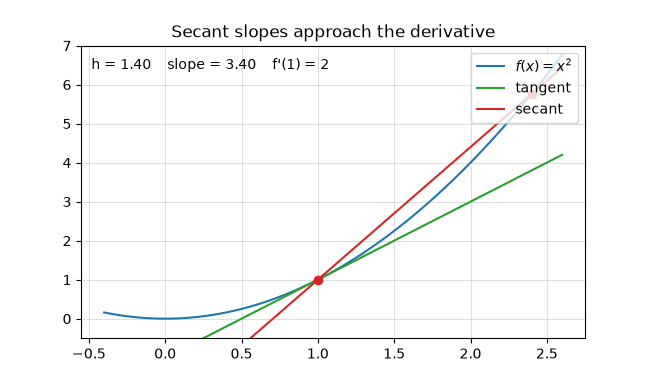
Figure 5 - Secant slopes approach \(f'(1) = 2\)
The same limit at a general point gives \(f'(a) = 2a\). At \(a = 3\) the slope is \(6\), which is the number checked in demo_simple_grad.py for a slightly larger polynomial, and again in demo_calculus_figures.py.
1.4.3.2 The Derivative as a Function
Let \(f\) be a function. The derivative function, denoted by \(f'\) , is the function whose domain consists of those values of \(x\) such that the following limit exists:
The derivative is itself a function: feed it an \(x\) and it returns the slope of \(f\) at that \(x\). For \(f(x) = x^2\), the derivative function is \(f'(x) = 2x\). Where \(f'\) is positive the original curve is rising; where \(f'\) is negative it is falling; where \(f'\) is zero the tangent is horizontal.
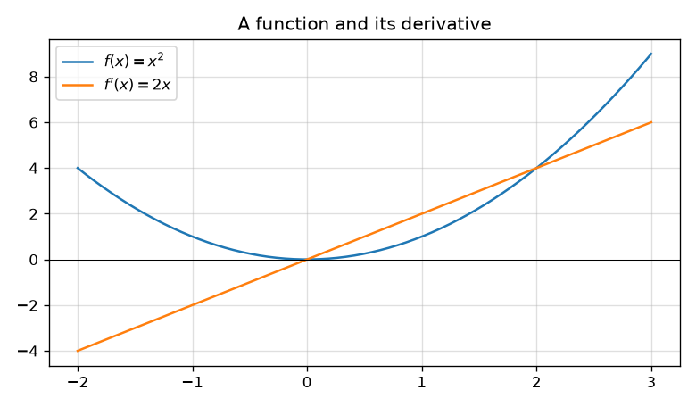
Figure 6 - \(x^2\) and its derivative \(2x\)
The derivative function is only defined where the limit exists. \(|x|\) is continuous everywhere and has a corner at \(0\). The difference quotient approaches \(1\) from the right and \(-1\) from the left, so \(f'(0)\) does not exist. A corner is the usual reason a layer is continuous but not differentiable.
1.4.3.3 Differentiation Rules
The limit definition always works and is rarely the fastest path. These rules differentiate constants, powers, sums, products, and quotients from the derivatives of the pieces.
The Constant Rule
We first apply the limit definition of the derivative to find the derivative of the constant function, \(f(x) = c\) . For this function, both \(f(x) = c\) and \(f(x+h) = c\) , so we obtain the following result:
The rule for differentiating constant functions is called the constant rule. It states that the derivative of a constant function is zero; that is, since a constant function is a horizontal line, the slope, or the rate of change, of a constant function is 0. We restate this rule in the following theorem.
The Power Rule
Let \(n\) be a positive integer. If \(f(x) = x^n\) , then \(f'(x) = n x^{n-1}\) .
Alternatively, we may express this rule as \(\frac{d}{dx} x^n = n x^{n-1}\).
The Sum, Difference, and Constant Multiple Rules
Let \(f(x)\) and \(g(x)\) be differentiable functions and \(k\) be a constant. Then each of the following equations holds.
Sum Rule. The derivative of the sum of a function \(f\) and a function \(g\) is the same as the sum of the derivative of \(f\) and the derivative of \(g\) .
Difference Rule. The derivative of the difference of a function \(f\) and a function \(g\) is the same as the difference of the derivative of \(f\) and the derivative of \(g\) :
Constant Multiple Rule. The derivative of a constant \(k\) multiplied by a function \(f\) is the same as the constant multiplied by the derivative:
Product Rule. The derivative of a product is not the product of the derivatives. Each factor is differentiated in turn, and the other factor is left as it is:
At \(x = \pi/2\), the product \(x \sin x\) has derivative \(\sin x + x \cos x = 1\). demo_calculus_figures.py checks that value.
Quotient Rule. For \(g(x) \ne 0\),
1.4.3.4 Derivatives as Rates of Change
If \(s(t)\) is position at time \(t\), the difference quotient \((s(t+h) - s(t))/h\) is the average velocity over a short interval. Its limit is the instantaneous velocity \(v(t) = s'(t)\). The derivative of velocity is acceleration. The same reading works for any pair of quantities: \(f'(a)\) is the instantaneous rate at which \(f\) changes per unit change in its input, evaluated at \(a\).
In the next chapter the input is a weight and \(f\) is the loss. \(\partial L / \partial w\) is how fast the loss changes when that weight moves. A negative rate means increasing the weight reduces the loss, which is the step gradient descent takes.
1.4.3.5 Derivatives of Trigonometric Functions
The two limits \(\lim_{h \to 0} \sin h / h = 1\) and \(\lim_{h \to 0} (1 - \cos h) / h = 0\) are enough to differentiate sine from the definition. Expanding \(\sin(x+h)\) and taking the limit produces
The cosine rule follows by writing \(\cos x = \sin(x + \pi/2)\) and using the chain rule from the next section, or by repeating the difference-quotient argument. The tangent rule is the quotient rule applied to \(\sin x / \cos x\). Higher derivatives cycle every four steps: sine, cosine, negative sine, negative cosine, and back to sine.
1.4.3.6 The Chain Rule
We have seen the techniques for differentiating basic functions (\(x^n\), \(sinx\), \(cosx\), etc.) as well as sums, differences, products, quotients, and constant multiples of these functions. However, these techniques do not allow us to differentiate compositions of functions, such as \(h(x) = sin(x^3)\) or \(k(x) = \sqrt{3x^2 + 1}\). In this section, we study the rule for finding the derivative of the composition of two or more functions.
Deriving the Chain Rule
Let \(y = f(u)\) and \(u = g(x)\), so \(y = f(g(x))\). A small change \(\Delta x\) produces \(\Delta u \approx g'(x)\,\Delta x\), and that change in the inner variable produces \(\Delta y \approx f'(u)\,\Delta u\). Multiply the two approximations and the \(\Delta u\) cancels:
For \(h(x) = \sin(x^3)\), the outer derivative is \(\cos(u)\) and the inner derivative is \(3x^2\), so \(h'(x) = \cos(x^3) \cdot 3x^2\). For \(k(x) = (3x^2 + 1)^{1/2}\), the outer power rule and the inner derivative give \(k'(x) = \frac{1}{2}(3x^2+1)^{-1/2} \cdot 6x\).
The animation follows one input through the composition \(y = \sin(x^2)\). The left panel is the inner map \(u = x^2\). The right panel is the composed curve. The caption is the chain rule evaluated at the moving point: \(\cos(x^2) \cdot 2x\).
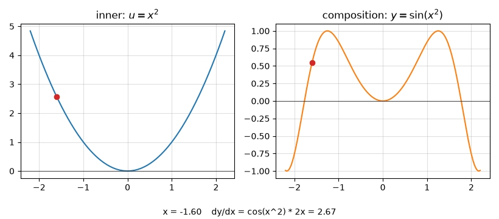
Figure 7 - The chain rule on \(\sin(x^2)\)
Backpropagation is this rule applied from the loss back to every weight. Each layer is one link in the chain. The gradient chapter writes the same multiplication on a small circuit of three variables.
1.4.3.7 Derivatives of Inverse Functions
Suppose \(f\) is differentiable and \(f'(a) \ne 0\), and let \(b = f(a)\). The inverse \(f^{-1}\) is differentiable at \(b\), and its slope is the reciprocal of the original slope:
The geometric reason is the reflection across \(y = x\): a tangent of slope \(m\) reflects to a tangent of slope \(1/m\). The practical payoff is \(\ln x\). It is the inverse of \(e^x\), and the derivative of \(e^x\) is \(e^x\), so
1.4.3.8 Implicit Differentiation
Some curves are given by a relation \(F(x, y) = c\) rather than by \(y = f(x)\). The circle \(x^2 + y^2 = 1\) is the usual example. Differentiate both sides with respect to \(x\), treating \(y\) as a function of \(x\) and applying the chain rule to every term that contains \(y\):
The slope depends on both coordinates, which matches the picture: the tangent is horizontal at the left and right extremes only if you are on the top or bottom, and the formula blows up where \(y = 0\), the left and right ends of the circle, where the tangent is vertical. Use this whenever the output you care about is defined by an equation you cannot solve for \(y\).
1.4.3.9 Derivatives of Exponential and Logarithmic Functions
The natural exponential is its own derivative. Every other exponential and logarithm reduces to that fact with the chain rule and the change-of-base formula \(\log_b x = \ln x / \ln b\).
Compositions are the form that shows up in a loss. If \(u\) depends on \(x\), then \(\frac{d}{dx} e^{u} = e^{u} u'\) and \(\frac{d}{dx} \ln u = u' / u\). The second of these is the derivative of a log-likelihood with respect to an unnormalized score.
1.4.4 Applications of Derivatives
The rules above are only useful once they answer a question: how fast is this changing, where is it largest, and what line best approximates it nearby. The rest of this section is those questions.
1.4.4.1 Related Rates
Related rates are the chain rule with time as the independent variable. Two quantities are tied by an equation, you know how fast one of them changes, and you want the other rate.
A balloon's volume and radius satisfy \(V = \frac{4}{3}\pi r^3\). Differentiate both sides with respect to \(t\):
If the radius is \(10\) cm and growing at \(2\) cm/s, the volume is growing at \(4\pi \cdot 100 \cdot 2 = 800\pi\) cubic centimeters per second. The same pattern covers every "how fast" word problem: write the relation, differentiate in \(t\), then substitute the known values.
1.4.4.2 Linear Approximations and Differentials
Near a point \(a\), a differentiable function looks like its tangent line. The linear approximation is
Writing \(\Delta x = x - a\) and \(\Delta y \approx f'(a)\,\Delta x\) is the same statement in the language of differentials: \(dy = f'(x)\,dx\). The figure uses \(f(x) = e^{x-1}\) at \(a = 1\), where \(f(1) = 1\) and \(f'(1) = 1\), so the tangent is the line \(y = x\). Close to \(x = 1\) the curve and the line are hard to tell apart; farther away the approximation drifts.
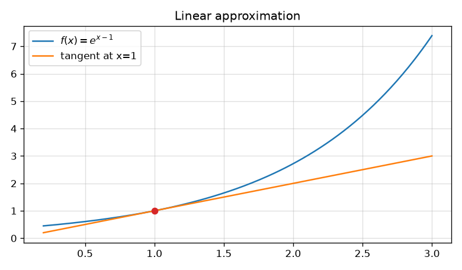
Figure 8 - The tangent line approximates the curve nearby
One gradient step is exactly this idea used in reverse. The loss is replaced by its linear approximation, and the weight is moved a small distance downhill. The step has to stay small because the approximation is only trustworthy near the current point.
1.4.4.3 Maxima and Minima
A number \(c\) in the domain is a critical point when \(f'(c) = 0\) or \(f'(c)\) does not exist. Local maxima and minima occur at critical points (or at endpoints, if the domain is a closed interval). The first-derivative test looks at the sign of \(f'\) on either side: increasing then decreasing means a local max, decreasing then increasing means a local min. The second-derivative test is shorter when \(f''(c)\) exists: \(f''(c) > 0\) is a local min, \(f''(c) < 0\) is a local max, and \(f''(c) = 0\) says nothing.
For \(f(x) = x^3 - 3x^2 + 1\), the derivative is \(f'(x) = 3x^2 - 6x = 3x(x-2)\). The critical points are \(x = 0\) and \(x = 2\). Then \(f''(x) = 6x - 6\), so \(f''(0) = -6\) and the point \((0, 1)\) is a local max, while \(f''(2) = 6\) and \((2, -3)\) is a local min.
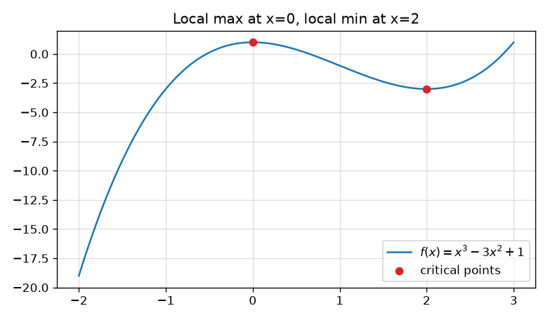
Figure 9 - Critical points of \(x^3 - 3x^2 + 1\)
1.4.4.4 The Mean Value Theorem
If \(f\) is continuous on the closed interval \([a, b]\) and differentiable on the open interval \((a, b)\), then there is at least one \(c\) strictly between \(a\) and \(b\) such that
The right-hand side is the slope of the secant through the endpoints. The theorem says some tangent in the middle is parallel to that secant. Rolle's theorem is the special case \(f(a) = f(b)\): then some \(c\) has \(f'(c) = 0\). One consequence used everywhere in error estimates: if \(f'(x) = 0\) throughout an interval, then \(f\) is constant there.
1.4.4.5 Derivatives and the Shape of a Graph
The first derivative controls direction. \(f' > 0\) on an interval means \(f\) is increasing there; \(f' < 0\) means \(f\) is decreasing. The second derivative controls bending. \(f'' > 0\) means the slope itself is increasing, so the graph is concave up (it holds water). \(f'' < 0\) means concave down. An inflection point is where the concavity changes and \(f\) is continuous.
On the cubic above, \(f''(x) = 6x - 6\) changes sign at \(x = 1\). The curve is concave down on \((-\infty, 1)\) and concave up on \((1, \infty)\), so \(x = 1\) is an inflection point, sitting between the local max and the local min.
1.4.4.6 Limits at Infinity and Asymptotes
A limit at infinity asks what happens as \(x\) grows without bound. \(\lim_{x \to \infty} f(x) = L\) means the graph flattens toward the horizontal line \(y = L\), a horizontal asymptote. A vertical asymptote at \(x = a\) is the other kind of blow-up: \(|f(x)|\) grows without bound as \(x\) approaches \(a\).
For a rational function, compare the degrees. If the denominator has higher degree, the limit at infinity is \(0\). If the degrees match, the limit is the ratio of the leading coefficients. If the numerator has higher degree, the limit is infinite and there is no horizontal asymptote. \(\lim_{x \to \infty} (3x^2 + 1)/(x^2 - 4) = 3\).
Training curves are a practical version of the same picture. A loss that falls and then levels off is approaching a horizontal asymptote. The asymptote is the best loss this model and this data will reach, not necessarily zero.
1.4.4.7 Applied optimization Problems
On a closed interval the extreme value theorem says a continuous function attains its maximum and minimum. The candidates are the critical points inside the interval and the two endpoints. Evaluate \(f\) at each candidate and pick the best.
The version you will actually run is unconstrained and high-dimensional: minimize a loss \(L(w)\). The calculus fact underneath is unchanged. At a local minimum that the derivative can see, \(\nabla L = 0\). For a one-dimensional rehearsal, \(L(w) = (w - 2)^2 + 1\) has \(L'(w) = 2(w-2)\), so the only critical point is \(w = 2\), and \(L''(w) = 2 > 0\) confirms a minimum. The value there is \(1\). Gradient descent is the algorithm that searches for that kind of point when you cannot solve \(L'(w) = 0\) by hand.
1.4.4.8 L'Hopital's Rules
When a quotient approaches the indeterminate form \(0/0\) or \(\infty/\infty\), and \(f'\) and \(g'\) exist near the point (except possibly at the point itself), with \(g' \ne 0\), then
provided the limit on the right exists or is infinite. The same statement holds for \(x \to \infty\). The standard check is \(\lim_{x \to 0} \sin x / x\). Both numerator and denominator approach \(0\), and the ratio of derivatives is \(\cos x / 1\), which approaches \(1\). So the original limit is \(1\). Apply the rule once per indeterminate form; do not differentiate the quotient by the quotient rule.
1.4.4.9 Newton's Method
Newton's method finds a root of \(f(x) = 0\). Start at a guess \(x_0\) and replace it by the place where the tangent line crosses zero:
For \(f(x) = x^2 - 2\), starting at \(x_0 = 1\), six iterations land on \(\sqrt{2}\) to well under \(10^{-4}\). The script that draws the figures in this chapter asserts that. The method needs \(f'(x_n) \ne 0\) and a guess that is not too far from a simple root; otherwise it can diverge or cycle.
Minimizing a loss is the related problem of finding a root of the derivative. Replacing \(f\) by \(f'\) in the formula above is Newton's method as an optimizer. It converges quickly near a minimum and costs a second derivative, which is why deep learning usually prefers the cheaper first-order step.
1.4.4.10 Antiderivatives
An antiderivative of \(f\) is any function \(F\) with \(F' = f\). Antiderivatives are not unique: if \(F\) works, so does \(F + C\) for any constant \(C\), and the mean value theorem says those are all of them on an interval. The power rule reverses as
Also \(\int e^{x}\, dx = e^{x} + C\), \(\int \cos x\, dx = \sin x + C\), and \(\int \sin x\, dx = -\cos x + C\). Checking an antiderivative is differentiating it. That check is the whole of the next section's fundamental theorem.
1.4.5 Integration
The definite integral \(\int_a^b f(x)\, dx\) is the signed area between the curve and the \(x\)-axis from \(a\) to \(b\). Area above the axis counts positive, area below counts negative. Define it as a limit of Riemann sums. Split \([a, b]\) into \(n\) pieces of width \(\Delta x = (b-a)/n\), pick a sample point \(x_i^*\) in each piece, and add the rectangle areas:
The figure uses the left endpoint of each piece under \(f(x) = x^2\) on \([0, 2]\). Eight rectangles already follow the curve; more rectangles close the gap. The exact area is \(8/3\).
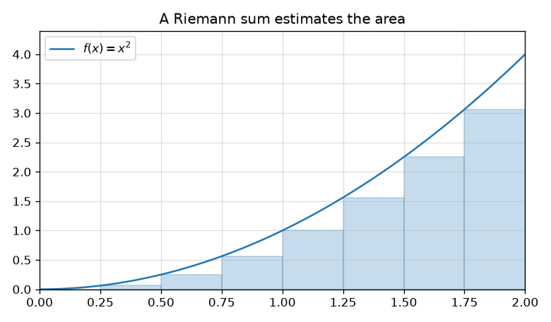
Figure 10 - A left Riemann sum for \(x^2\) on \([0, 2]\)
The fundamental theorem ties the area back to antiderivatives. If \(f\) is continuous and \(F' = f\), then
The other half says the area function \(A(x) = \int_a^x f(t)\, dt\) satisfies \(A'(x) = f(x)\). Differentiation and integration are inverse operations. For \(x^2\) on \([0, 2]\), an antiderivative is \(x^3/3\), and \(8/3 - 0 = 8/3\).
1.4.6 Applications of Integration
The area between two curves \(f\) and \(g\), with \(f \ge g\) on \([a, b]\), is \(\int_a^b (f(x) - g(x))\, dx\). The average value of a continuous function on that interval is
The mean value theorem for integrals says the continuous function actually attains this average somewhere in the interval. Volumes of solids of revolution are the same idea with disk or shell areas in place of \(f(x)\); the OpenStax volumes work several of them.
The application that this book needs is probability. A density \(p(x)\) is a nonnegative function whose integral over the whole line is \(1\). The probability of an interval is the area under \(p\) on that interval, and the expected value of \(X\) is \(\int x\, p(x)\, dx\). Section 6.1 writes the normal density and plots it; the integral underneath that plot is the definition just given.
1.4.7 Techniques of Integration
Most integrals that show up by hand yield to one of two reversals of a differentiation rule.
Substitution reverses the chain rule. If \(u = g(x)\), then \(du = g'(x)\, dx\) and
For \(\int 2x \cos(x^2)\, dx\), take \(u = x^2\), so \(du = 2x\, dx\), and the integral becomes \(\int \cos u\, du = \sin(x^2) + C\). Differentiate \(\sin(x^2)\) and the chain rule returns \(2x\cos(x^2)\), which is the check.
Integration by parts reverses the product rule. From \((uv)' = u'v + uv'\) you rearrange to
For \(\int x e^{x}\, dx\), choose \(u = x\) and \(dv = e^{x}\, dx\), so \(du = dx\) and \(v = e^{x}\). Then \(x e^{x} - \int e^{x}\, dx = e^{x}(x - 1) + C\).
Two further tools cover the integrals those two miss. Partial fractions splits a rational function into a sum of simpler fractions, one per factor of the denominator. Trigonometric substitution uses a right triangle to turn \(\sqrt{a^2 - x^2}\), \(\sqrt{a^2 + x^2}\), or \(\sqrt{x^2 - a^2}\) into a sine, tangent, or secant. Both are worked in detail in Calculus Volume 2. In this book, when an integral is not one of the forms above, it is computed numerically or left inside a probability identity.